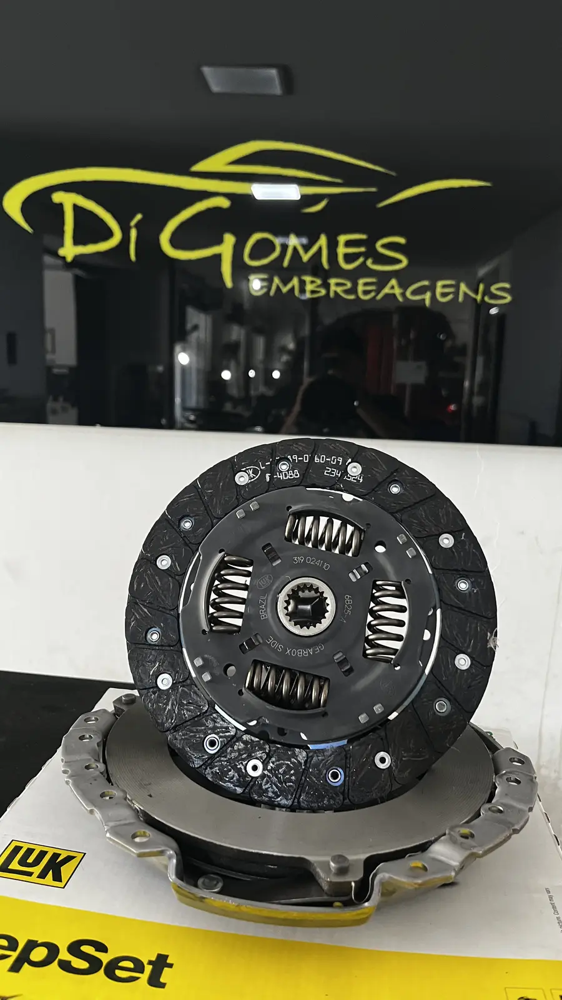
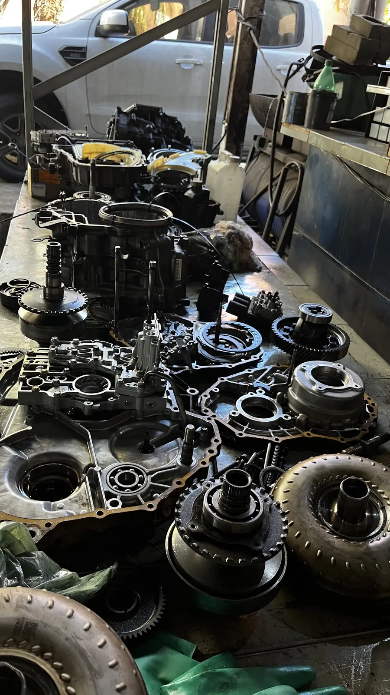
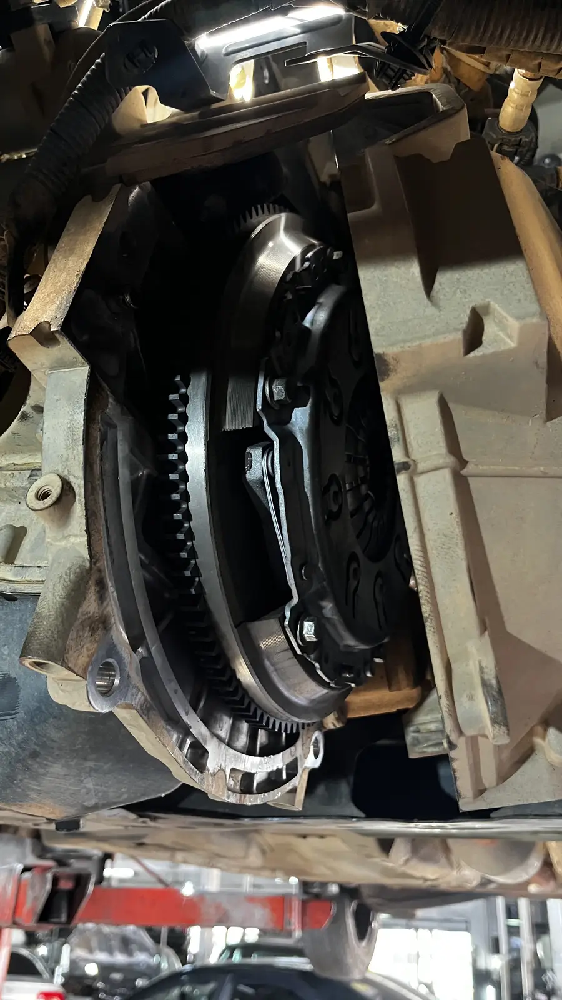
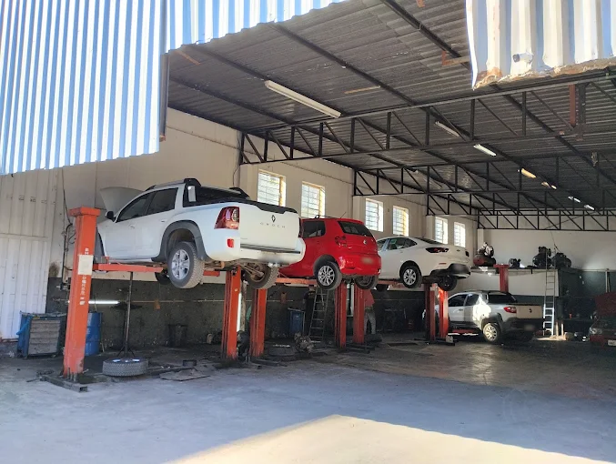
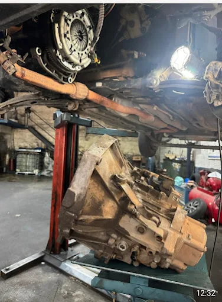

Manutenção automotiva em BH
Serviços de embreagem e transmissão
O mesmo sintoma pode ter causas diferentes. Por isso, cada atendimento começa com uma avaliação do conjunto antes da indicação de peças ou reparos.

01Troca e diagnóstico de embreagem
Kit, sistema de acionamento, volante e componentes relacionados.
Detalhes do serviço
02Câmbio automatizado
Falhas, atuadores, trancos e manutenção de sistemas automatizados.
Detalhes do serviço
03Câmbio manual
Dificuldade de engate, ruídos, rolamentos, sincronizadores e vazamentos.
Detalhes do serviço04Câmbio automático
Avaliação da transmissão e troca de fluido conforme especificação.
Detalhes do serviço
05Freios e suspensão
Inspeção e substituição de componentes ligados ao controle do veículo.
Detalhes do serviço
06Diagnóstico técnico
Leitura de sintomas, testes e identificação da origem do problema.
Detalhes do serviçoNão sabe qual serviço procura?
Descreva o sintoma. A equipe orienta o próximo passo.